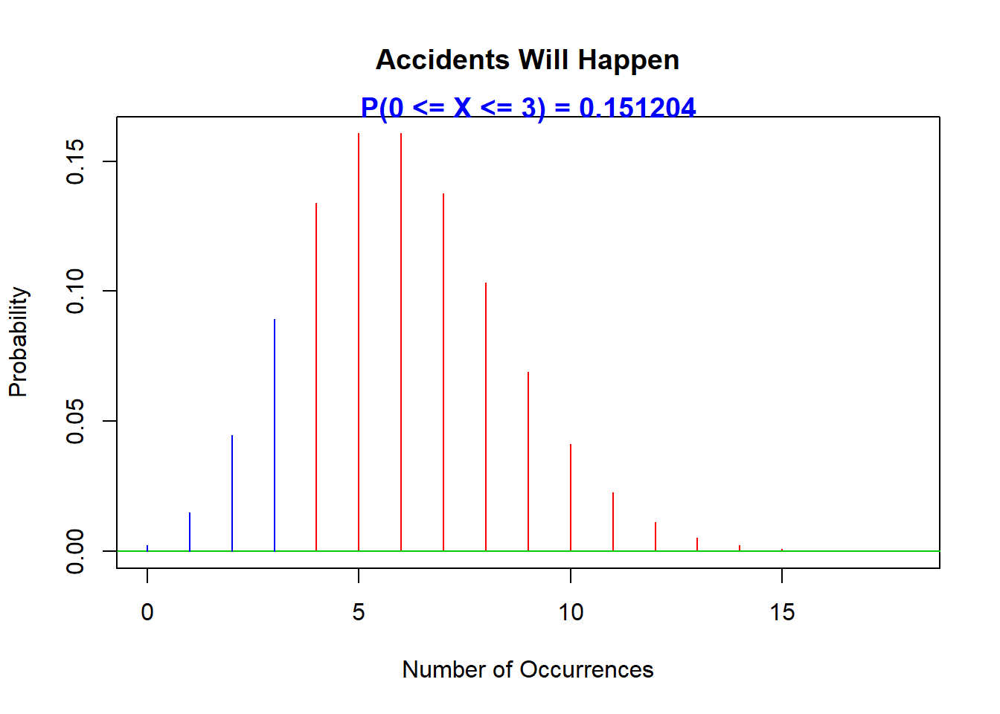

Chapter 9 Poisson Distribution
9.1 Imagine this
Here are some events we might consider.
- Your corporate website get 2 hits per minute
- There have been 3 pandemics in the last 100 years
- Your satellite TV fails to record a show at least 4 times a month
- Your most important client has 6 meltdowns a month
Let’s ask some questions next.
What do we want to know? How probable any and / or all of the events will happen!
Why? So we can plan our life a bit better – allocate scarce time and money more efficiently, at the very least.
There is a distribution we can use to model the incomplete, and thus uncertaain information contained in these events and in our potential response to these events. The Poisson random variable will help us with this task and satisfies the following conditions:
- The number of successes in two disjoint (non-overlapping) time intervals is independent.
- The probability of a success during a small time interval is proportional to the entire length of the time interval.
Apart from disjoint time intervals, the Poisson random variable also applies to disjoint regions of any kind of space, such as geographical and market.
Here are some applications of Poisson thinking about events.
- The number of deaths by horse kicking in the Prussian army (first application)
- Birth defects and genetic mutations
- Rare diseases
- Car accidents
- Traffic flow and ideal vehicle gap distance
- Number of typing errors on a page
- Hairs found in McDonald’s hamburgers
- Extinction of an endangered animal in Africa
- Failure of a machine in one month
- Frequency of cyber attacks in a year
Why not stick with the binomial distribution? Good question. We use the binomial when we need to find the probability of the number of successes in so many trials.
On the other hand we use the Poisson distribution when we need to find the probability of a number of successes unit of time or space.
9.2 Let’s calculate
As always we define success first.
- First define the number of success as \(X\).
- Next, suppose successes occur with intensity (same as: at a frequency or rate) of \(\lambda\) per unit time or space.
- Then, the probability of a specified number of successes \(X = x\) per unit time (or space) is \[ P(X = x) = \frac{\lambda^{x}e^{-x}}{x!} \] where \(e = 2.71828\) is the base of the natural logarithm.
9.2.1 Try this
We estimate that 6 accidents (“vehicular contacts”) per month occur at the intersection of Crosby and Westchester Avenues in the Bronx.
What is the probability of 3 accidents in any month?
Plot the distribution of accidents from 0 to 20.
what is the probability of 3 accidents or less in any month?
9.2.2 Results
What is the probability of 3 accidents in any month? We let \(X\) be the number of possible accidents per month at this intersection. Out data is \(X = x = 3\) and \(\lambda = 6\). We can then compute \[ \begin{array}{c} P(X = 3) = \frac{\lambda^{x}e^{-x}}{x!} \\ \\ = \frac{6^{3}e^{-3}}{3!} \\ \\ = \frac{(216)(0.002478)}{3x2x1} \\ \\ = \frac{0.5354105}{6} \\ \\ = 0.08923508 \end{array} \] that is, 8.9%.
Plot the distribution of accidents from 0 to 20.

- What is the probability of 3 accidents or less in one month?
9.3 Some (mercifully) short exercises
- Customers pass through the doors of a retail outlet at an average rate of 300 per hour.
- Find the probability that none passes in a given minute.
- What is the expected number passing in two minutes?
- Find the probability that this expected number actually pass through in a given two-minute period.
Answers : 0.0006, 10, 12.5%
- A company makes windmill rotors. The probability a rotor is defective is 0.01. What is the probability that a sample of 300 rotors will contain exactly 5 defective rotors? [Use both the Poisson and the Binomial distributions to arrive at an answer.]
Answer : a little over 10%
9.3.1 Not so short exercises
The number of calls into your call center averages 3 per minute.
- Find the probability that no calls come in a given 1 minute period. Answer: 4.978%
- Assume that the number of calls arriving in two different minutes are independent. Find the probability that at least two calls will arrive in a given two minute period. Answer: 98.26%
9.3.2 Answers
Let \(X_1\) and \(X_2\) be the number of calls coming in the first and second minutes respectively. We want \(P(X_1 + X_2 \geq 2)\).
Let’s organize the answer this way \[ P(X_1 + X_2 \geq 2) = 1-P(X_1 + X_2 < 2) \] In this way we only need to look at no calls (0 minutes) and 1 minute calls, or, for each possible sequence of 0 and 1 minute calls each sequence happening together (intersection) and independently. We have \(1-P(X_1 + X_2 < 2) = 1-(P(X_1 = 0 \cap X_2 = 0)\) \(+ P(X_1 = 1 \cap X_2 = 0) + P(X_1 = 0 \cap X_2 = 1))\) which, in turn, equals \(= 1 - [P(X_1 = 0) P(X_2 = 0)\) \(+ P(X_1 = 1) P(X_2 = 0) + P(X_1 = 0) P(X_2 = 1)]\)
We already know from the first answer that \[ P(X = 0) = \frac{e^{-3}3^0}{0!} = e^{-3} \] which equals 0.0498. We can then compute \[ P(X = 1) = \frac{e^{-3}3^1}{1!} = 3exp(-3) \] which equals 0.1494.
Putting this altogether we have \(P(X_1 + X_2 \geq 2) =\) \(1- [(0.0498)(0.0498)+(0.1494)(0.0498)+(0.0498)(0.1494)]\) \(= 1-0.01736\) \(= 0.9826\)
or 98.26%.
9.4 Deriving Poisson from Binomial
Suppose we have 20 web store visitors per day. This means 20/12 = 1.6667 people visited per hour. If we model the success as a visit we can calculate the probability of a visit by hour using the binomial process. This means that most of the hours get zero visits but some hours will get exactly 1 visit. However we observe that in some hours there are more than 1 visitor.
The problem with the binomial approach is that it can not envisage more than one event in any unit of time or space. But suppose we then divide 1 hour into 60 minutes, and thus make the time unit smaller, say, the 60 minutes in an hour? Now 1 hour can contain multiple visits. But our problem remains: any one minute will contain exactly one or no visits. This gives us a clue as to how we might solve the problem of calculating the probability of multiple visits in an hour.
Furthermore it is possible that there are more than one visit in even a minute. So then we divide the minute further into 60 seconds to begin to account for this set of events. It is even possible that more than one customer visits the web store in a second, and so on. We divide the unit of time into smaller and smaller intervals.
We can coerce the binomial process to handle multiple events by dividing a unit time into smaller units. By using smaller time intervals, we can make the original unit time contain more than one event. Mathematically, this means that \(n\), the number of trials, experiments, or observations approaches a very large number: \(n \rightarrow \infty\). But the number of events in the binomial process is \(np\), so as \(n\) gets big, then for any positive probability of a single success \(p\), \(np\) will explode. To handle this we let \(p \rightarrow 0\) as \(n \rightarrow \infty\).
Since we assume the rate of visitors per hour is fixed because otherwise, \(np\), which is the number of events, will blow up. Using the limit, the unit times are now infinitesimal. We no longer have to worry about more than one event occurring within the same unit time. And this is how we derive Poisson distribution. One more step will
In the binomial distribution, the number of trials \(n\) should be known before hand. If you use binomial, you cannot calculate the success probability only with the rate (i.e. 17 ppl/week). You need more iniformation: both \(n\) and \(p\).
The Poisson Distribution, on the other hand, doesn’t require you to know n nor p. We are assuming n is infinitely large and p is infinitesimal. The Poisson distribution uses the intensity rate \(\lambda\) which collapses \(np\) into a single parameter. In practical applications we usually only know this intensity rate.
Let’s start with the binomial probability distribution:
\[ P(x = k) = {n \choose x} p^k (1-p)^{n-k} \] Next exploit the definition of \(\lambda = np\) to calculate \(p\).
\[ p = \frac{\lambda}{n} \] Insert this into the binomial formula, and let \(n\) get ever larger, so that in the limit we have
\[ P(x = k) = lim_{n \rightarrow \infty} {n \choose k} \left(\frac{\lambda}{n}\right)^k \left(1-\left(\frac{\lambda}{n}\right)\right)^{n-k} \] Splitting up the \((1-p)^{n-k}\) term we see that
\[ P(x = k) = lim_{n \rightarrow \infty} {n \choose k} \left(\frac{\lambda}{n}\right)^k \left(1-\left(\frac{\lambda}{n}\right)\right)^{n} \left(1-\left(\frac{\lambda}{n}\right)\right)^{-k} \]
\[ lim_{n \rightarrow \infty} \left(1-\left(\frac{\lambda}{n}\right)\right)^{n} = e^{-\lambda} \] This is the very definition of \(e^{-\lambda}\) embedded in Jacob Bernoulli’s discovery of the transcendental number \(e\).
As \(p = \lambda/n\) gets very small with \(n\) getting very large for relatively increasingly very small \(k\), then this term approaches 1.
\[ lim_{n \rightarrow \infty}\left(1-\left(\frac{\lambda}{n}\right)\right)^{-k} = 1 \]
Finally, we can use this notion think through the idea that \({n \choose k}\) also approaches 1.
\[ {n \choose k}\left(\frac{\lambda}{n}\right)^k = \frac{n!}{(n-k)! \, \, k!}\left(\frac{\lambda}{n}\right)^k = \frac{n!}{(n-k)! \, \, k!}\left(\frac{\lambda^k}{n^k}\right) = \frac{n!}{(n-k)! \, \, n^k}\left(\frac{\lambda^k}{k!}\right) \]
But, \[ lim_{n \rightarrow \infty} {n \choose k} = lim_{n \rightarrow \infty} \frac{n!}{(n-k)! \, \, n^k}\left(\frac{\lambda^k}{k!}\right) = lim_{n \rightarrow \infty} \frac {n(n-1)(n-2) \dots (n-k+1)}{nn \dots n} = 1 \]
There are \(k\) terms in both the numerator and denominator. The numerator is ever only slightly smaller than the denominator and the two will converge eventually to equal each other since \(n\) is collosally greater than \(k\).
Finally, we have the Poisson probability.
\[ P(x = k) = lim_{n \rightarrow \infty} {n \choose k} \left(\frac{\lambda}{n}\right)^k \left(1-\left(\frac{\lambda}{n}\right)\right)^{n-k} \] \[ P(x = k) = lim_{n \rightarrow \infty} (1)e^{\lambda}{} \left(1-\left(\frac{\lambda}{n}\right)\right)^{n-k} \] We got the Poisson Formula!